GIF 动态作品
特效演示 · 动态预览
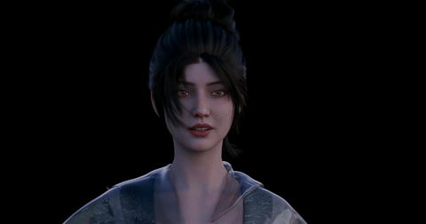

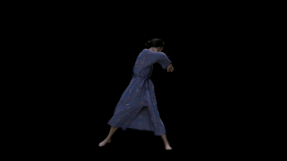
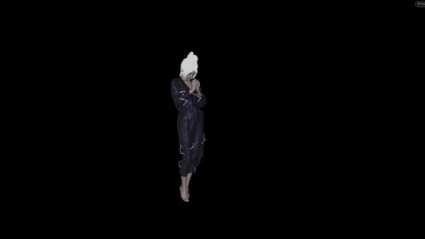
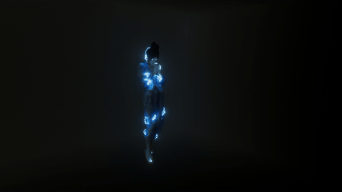
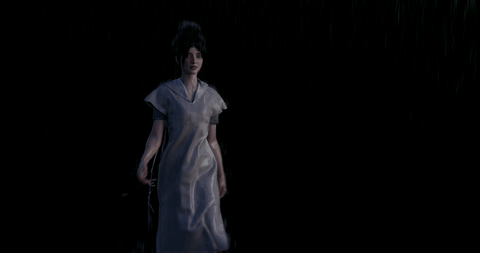

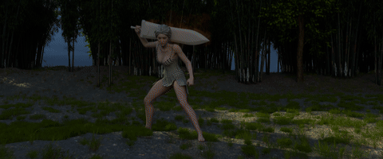
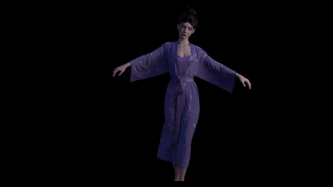
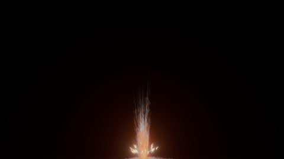


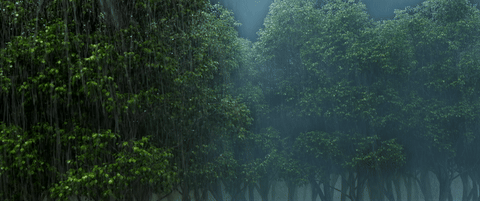
特效模拟 · 场景渲染 · 动态视觉实验
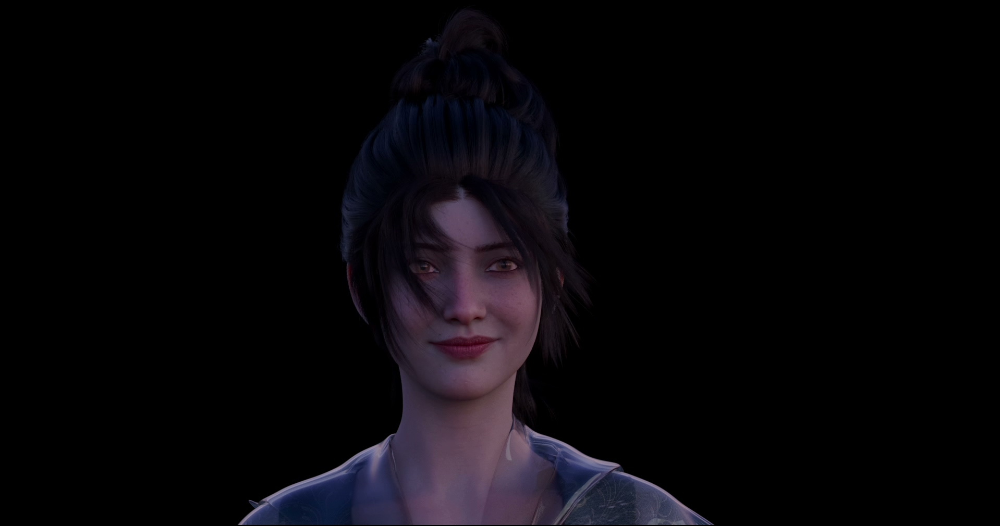
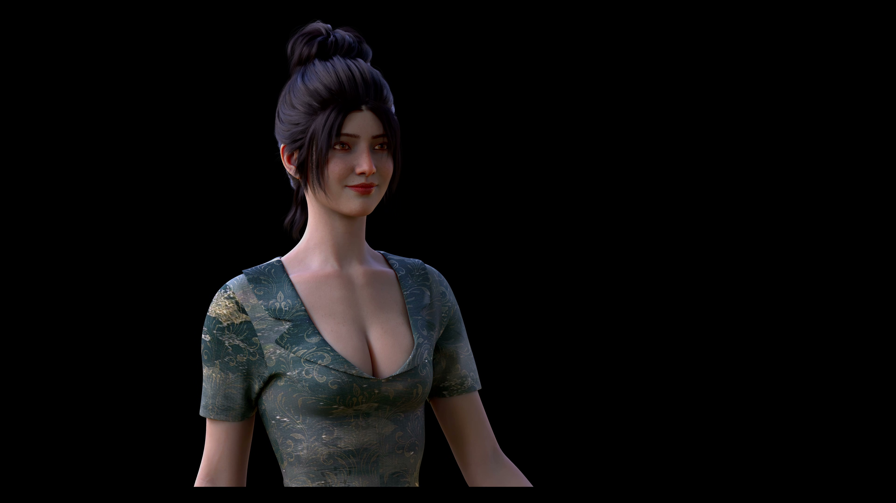
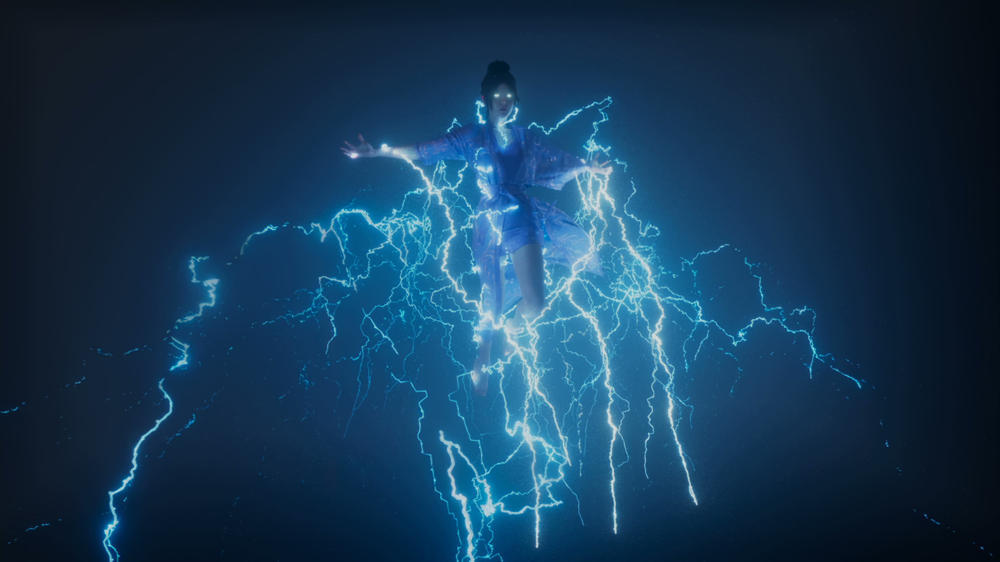
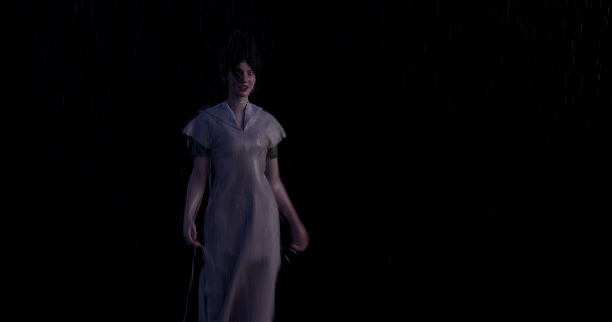
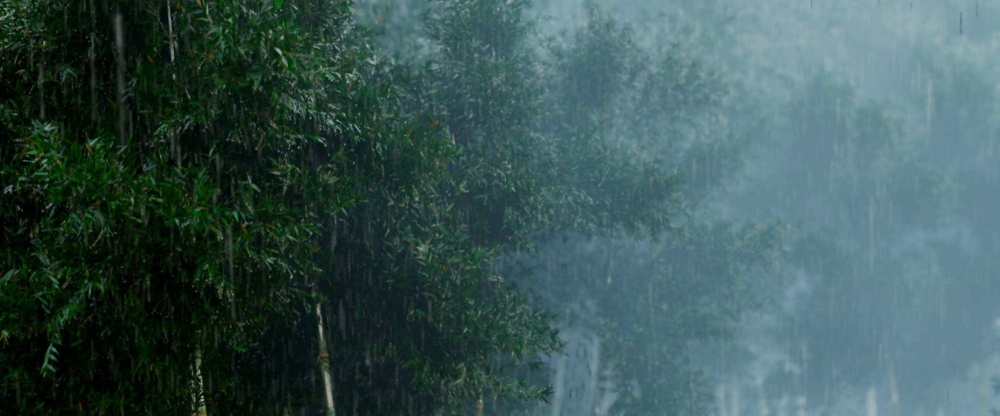
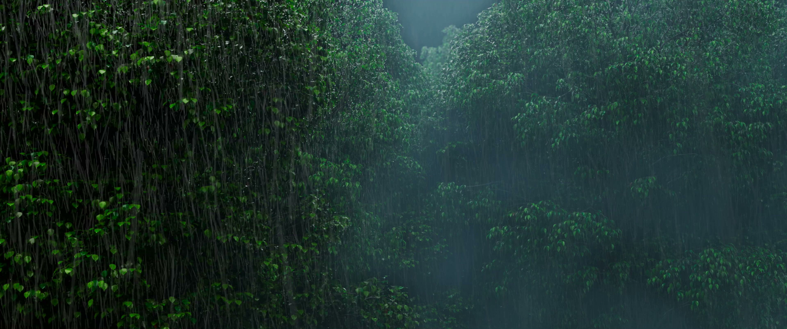
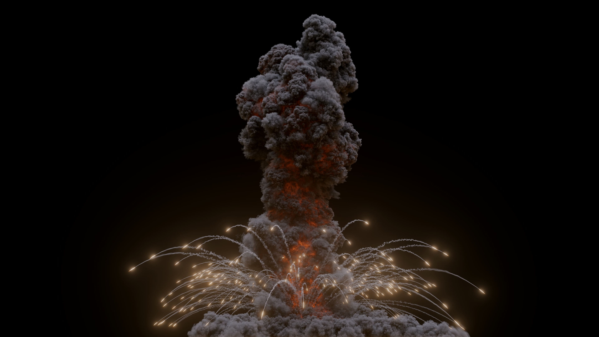
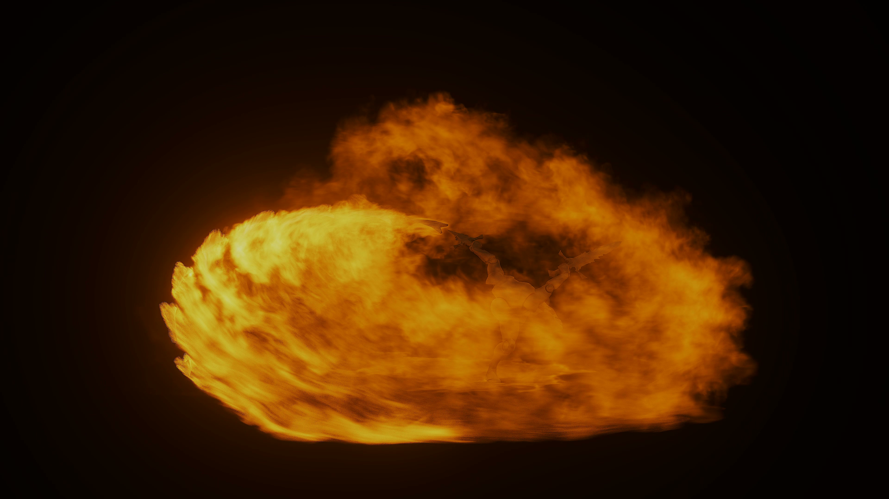
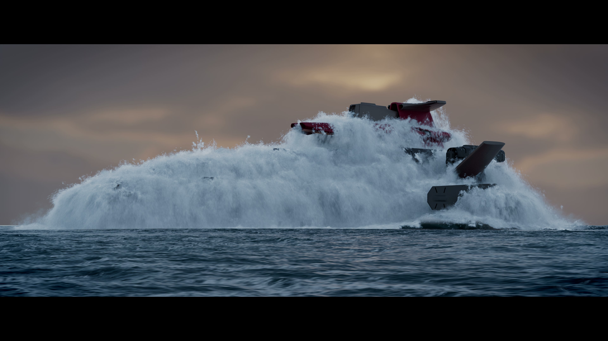
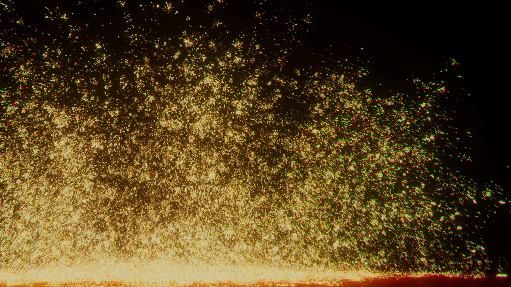
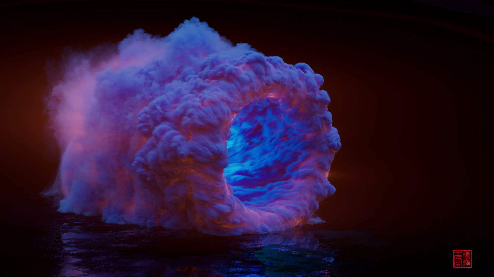
特效演示 · 动态预览









Houdini 特效 · 角色展示 · 场景渲染
科幻 · 仙侠 · 世界观构建
天地之间，有一处被遗忘的角落。那里终年弥漫着淡淡的寒雾，灵力紊乱，空间薄弱。顾家，一个千年不为人知的秘密，藏于苍白边境的深处……
魔气翻涌如海，裂隙狰狞如渊。顾玄凛立于虚空之中，帝袍残破，浑身浴血。三位大乘陨落于他的霜剑之下，但他自己的本源也已枯竭殆尽……
「一切终将归于虚无……有序是暂时的涨落，寂灭是永恒的归宿……」灰雾弥漫的空间中，机械残骸、生物遗骨、能量消散后的余烬——无数文明的废墟若隐若现。
青云宗小竹峰，洞府内寒玉打坐台与全息投影工作台共存，多维灵气分析仪的指示灯有规律地明灭。峰主妙云依正研究人联配发的「便携式小宇宙发生器」……
归墟寂主的意志化身被激怒，五维空间发出了不堪重负的哀鸣。绝望渗入每个人的心中。就在所有人都准备迎接最终湮灭的时刻——「滴答。」孟舒的战术目镜内侧响起一声提示音……
看着自动门无声滑闭，将弟子卡兰那充满朝气（且无知无畏）的背影隔绝在外，孟舒如同被抽空了脊椎骨般，彻底瘫在了办公椅上。他刚刚亲手放生了一头披着科研热情外衣的「麻烦」……